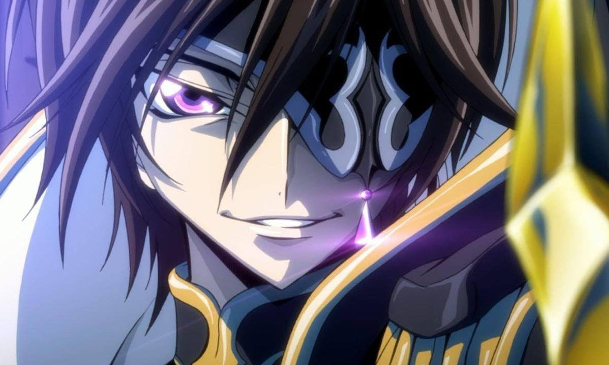
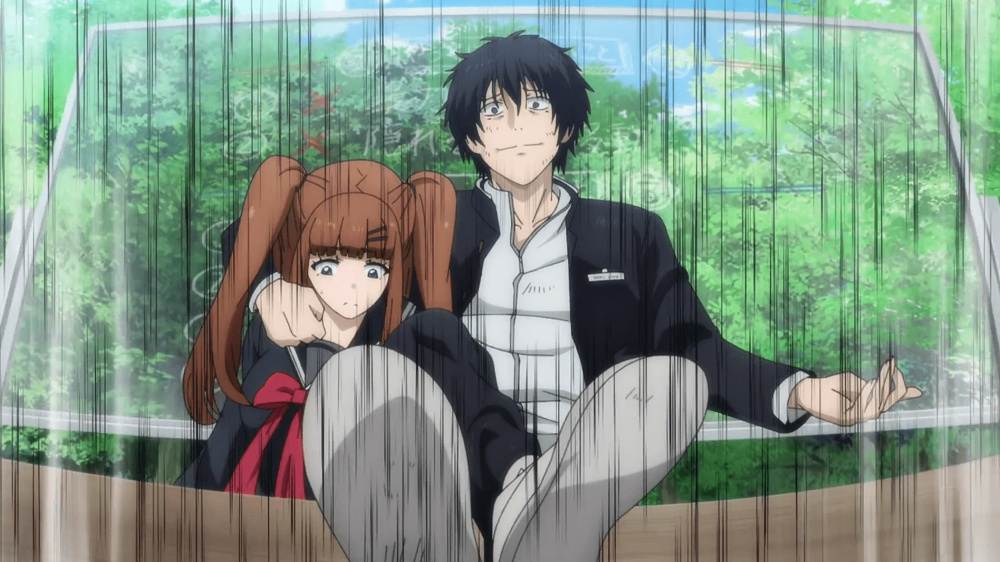
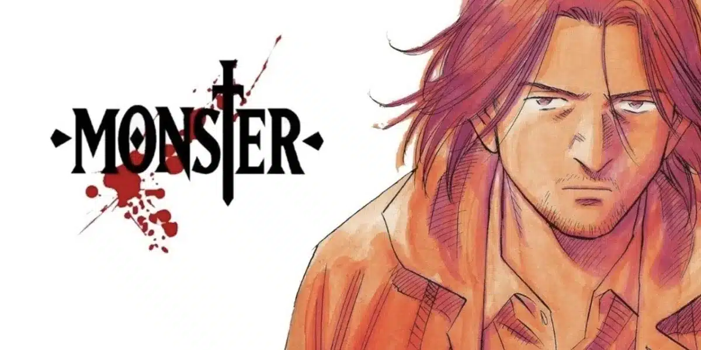
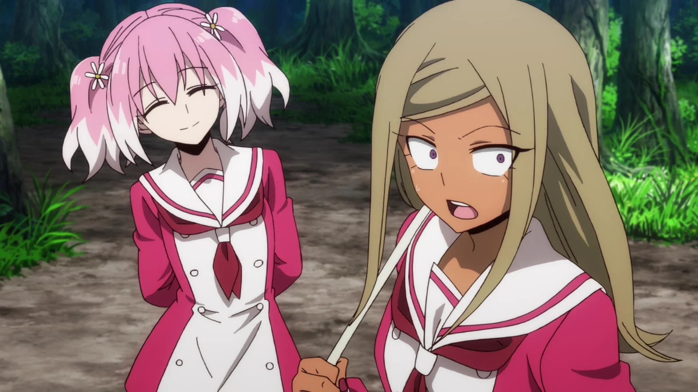
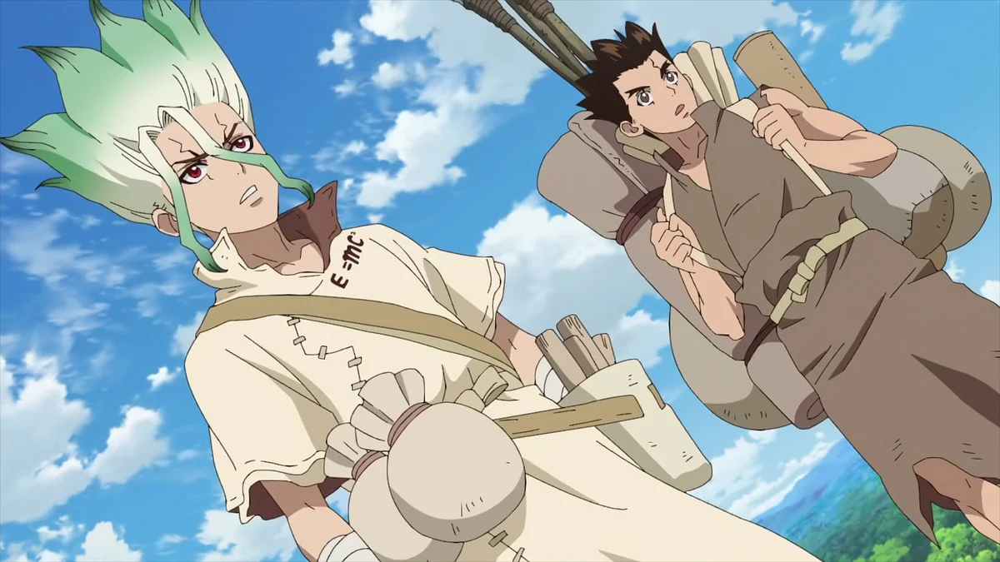
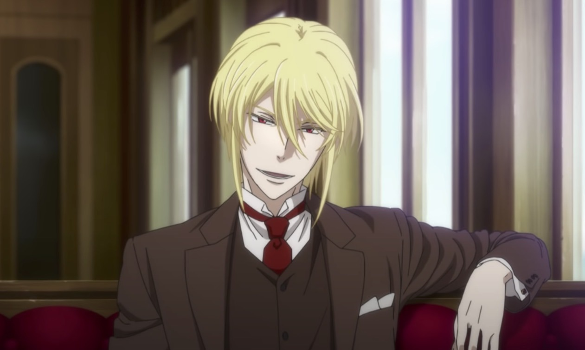
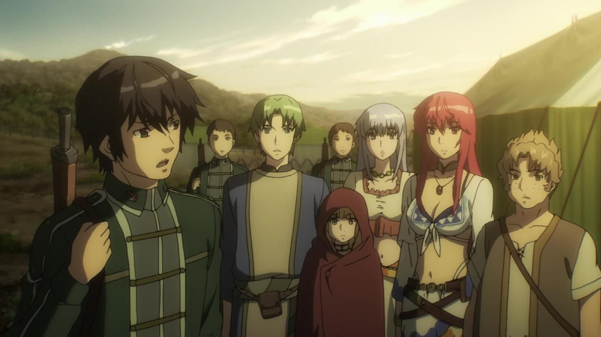
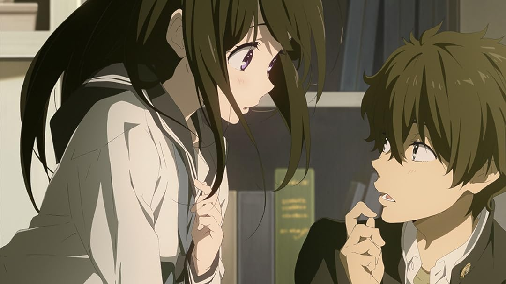

SMASH Senpai
Top 10 Anime With Genius Main Characters
Not every battle is won with fists. Some are decided before they even begin — through planning, manipulation, and intelligence so sharp it feels unfair.
This list is all about genius main characters. Strategists. Masterminds. People who control the entire story by thinking ten steps ahead while everyone else struggles to keep up.
These protagonists don’t rely on brute force or luck. They win through logic, psychological warfare, deception, and the ability to read both allies and enemies like open books.
You’ll find mind games, moral dilemmas, manipulation, and intense intellectual battles — the kind that make every episode feel tense.
These are the Top 10 Anime With Genius Main Characters — where intelligence is the most dangerous weapon of all.
Sponsored
Death Note

Death Note is the gold standard when it comes to genius main characters. Light Yagami isn’t just intelligent — he’s terrifyingly calculated. From the moment he obtains the Death Note, the series transforms into a high-stakes intellectual war where every move is planned several steps in advance.
What makes Light fascinating isn’t raw intelligence alone, but how confidently he manipulates people, systems, and even emotions. He predicts reactions, controls narratives, and sets traps that only activate once his opponent believes they’ve already won.
The cat-and-mouse battle between Light and L elevates Death Note into a pure mind-game anime. There are no simple victories here. Every conversation, glance, and decision carries hidden meaning. One mistake means exposure — or death.
Death Note thrives on psychological tension. The audience is constantly invited to think alongside the characters, trying to anticipate outcomes that feel both shocking and inevitable. It’s an anime where intelligence drives the plot entirely.
- Genre: Psychological, Thriller, Supernatural
- Best for: Mind games, strategic battles
- Why it fits: Genius manipulation and planning

play anime smash or pass here (not sponsored)
SMASH SENPAI – Smash or PassCode Geass
Code Geass delivers one of the most iconic genius protagonists in anime history. Lelouch Lamperouge isn’t simply smart — he’s a battlefield tactician, political manipulator, and revolutionary mastermind rolled into one.
Unlike many protagonists, Lelouch’s intelligence operates on a massive scale. He doesn’t just outthink individuals; he outmaneuvers entire nations. Every rebellion, ambush, and sacrifice is carefully calculated to push the world toward his desired outcome.
What makes Lelouch truly compelling is how intelligence clashes with emotion. His plans often succeed, but at an enormous personal cost. The anime constantly asks whether genius justifies cruelty, and whether a perfect plan can ever exist in an imperfect world.
Code Geass blends strategy, drama, and moral complexity, making every victory feel earned — and every loss devastating. It’s a masterclass in how intelligence can shape history.
- Genre: Action, Mecha, Psychological
- Best for: Tactical warfare, political strategy
- Why it fits: Large-scale genius planning
Sponsored
Classroom of the Elite

Classroom of the Elite takes a different approach to genius. Ayanokoji Kiyotaka isn’t loud, flashy, or openly dominant. His intelligence operates quietly — in shadows, behind the scenes, where manipulation feels almost invisible.
What makes Ayanokoji terrifying is restraint. He intentionally hides his true abilities, allowing others to underestimate him while he controls outcomes without ever taking credit. Every test, alliance, and conflict becomes another opportunity for psychological domination.
The anime thrives on social strategy rather than direct confrontation. Intelligence here isn’t about solving puzzles — it’s about understanding people, exploiting weaknesses, and shaping events without being seen.
Classroom of the Elite proves that genius doesn’t need attention. Sometimes the most dangerous person in the room is the one no one is watching.
- Genre: Psychological, Drama
- Best for: Manipulation, social mind games
- Why it fits: Cold, calculated intelligence
Tomodachi Game
Tomodachi Game is proof that intelligence doesn’t need power, status, or supernatural abilities to be absolutely terrifying. Yuichi Katagiri operates entirely through psychological warfare, manipulation, and an unnerving ability to read people under pressure.
The anime places characters into cruel social games where trust, friendship, and morality are constantly tested. What separates Yuichi from everyone else is how quickly he understands the true nature of the game — not the rules on paper, but the human weaknesses hidden behind them.
Yuichi’s genius lies in deception. He willingly paints himself as reckless, unstable, or even evil if it helps him control the flow of information. Every smile, outburst, or confession is calculated, designed to push opponents into revealing their real intentions.
Tomodachi Game thrives on tension. Victories don’t come from brute force or luck, but from setting psychological traps so subtle that enemies defeat themselves without realizing it.
This is an anime where intelligence feels dangerous, where winning often means destroying trust entirely — and Yuichi proves that the smartest player is the one who understands people better than they understand themselves.
- Genre: Psychological, Thriller
- Best for: Mind games, betrayal
- Why it fits: Master-level manipulation
Sponsored
Monster
Monster approaches genius from a chillingly realistic angle. Instead of flashy strategies or dramatic reveals, intelligence here is subtle, patient, and deeply disturbing. Johan Liebert represents a level of psychological mastery that feels frighteningly possible.
Johan doesn’t need elaborate plans or visible manipulation. His intelligence manifests through understanding human nature so deeply that people willingly destroy themselves around him. He plants ideas, influences emotions, and lets others carry out his will without ever realizing it.
What makes Monster unique is how intelligence is portrayed as a moral threat. Johan isn’t trying to win games or gain power — he challenges the very value of human life. His actions expose how fragile morality becomes when confronted with someone who understands it too well.
The slow pacing of Monster amplifies its psychological weight. Every conversation feels loaded, every decision echoes far beyond its moment. Intelligence here isn’t exciting — it’s haunting.
Monster proves that a genius doesn’t need dominance or authority. Sometimes, the most dangerous mind is the one that never needs to raise its voice.
- Genre: Psychological, Thriller
- Best for: Mature storytelling, moral tension
- Why it fits: Psychological genius at its darkest
Talentless Nana
Talentless Nana flips expectations from its very first episode. In a world filled with superpowered individuals, Nana stands out precisely because she has none — yet remains one of the most dangerous characters in the story.
Nana’s intelligence is rooted in deception and adaptability. She survives by blending in, gaining trust, and eliminating threats before they realize what’s happening. Every interaction becomes a performance, carefully designed to avoid suspicion.
What makes Nana compelling is how much pressure she operates under. One mistake means exposure and death. Unlike traditional genius characters, her plans constantly evolve as circumstances change, forcing her to improvise under extreme stress.
The anime thrives on suspense. Viewers are pulled into Nana’s perspective, watching her balance lies, emotions, and survival while surrounded by enemies far stronger than herself.
Talentless Nana proves that intelligence doesn’t require power. It requires awareness, control, and the courage to act decisively when hesitation means failure.
- Genre: Psychological, Thriller
- Best for: Deception-driven tension
- Why it fits: Outsmarting superpowers
Sponsored
Dr. Stone
Dr. Stone takes a completely different approach to the “genius main character” concept by grounding intelligence in real science rather than manipulation or psychological warfare. Senku Ishigami is not a strategist of people — he is a strategist of reality itself.
After humanity is mysteriously turned to stone, Senku awakens thousands of years later with one goal: rebuild civilization from scratch using science alone. No magic. No shortcuts. Just knowledge, logic, and experimentation.
What makes Senku’s intelligence compelling is its optimism. While other genius protagonists dominate through fear or control, Senku inspires others by teaching, explaining, and making knowledge accessible. His brain is a weapon — but one meant to uplift rather than destroy.
The anime excels at showing how intelligence creates progress. Every invention, from primitive tools to advanced technology, feels earned and satisfying. Senku’s confidence is absolute, yet never arrogant — he trusts science above all else.
Dr. Stone belongs on this list because it proves that genius doesn’t need cruelty or manipulation. Sometimes, the smartest character is the one who rebuilds the world instead of conquering it.
- Genre: Sci-Fi, Adventure
- Best for: Science-based intelligence
- Why it fits: Knowledge as ultimate power
Moriarty the Patriot
Moriarty the Patriot redefines the genius protagonist by placing intelligence firmly in the realm of ideology and revolution. William James Moriarty is not just smart — he is methodical, philosophical, and terrifyingly composed.
Living in a rigid class-based society, Moriarty believes the system itself is corrupt beyond repair. His solution is not reform — but controlled destruction carried out through flawless planning.
What makes Moriarty exceptional is his long-term vision. Every crime is part of a greater narrative. Every move is designed to expose injustice while positioning himself as both villain and savior. He doesn’t react — he orchestrates.
The anime thrives on intellectual duels, particularly between Moriarty and Sherlock Holmes. These clashes are battles of ideals as much as intellect, where every word carries weight.
Moriarty the Patriot earns its place on this list because it presents genius as leadership through manipulation. Moriarty doesn’t just outthink individuals — he reshapes society itself through calculated chaos.
- Genre: Psychological, Mystery
- Best for: Mastermind-level planning
- Why it fits: Intelligence as revolution
Alderamin on the Sky
Alderamin on the Sky introduces one of the most underrated genius main characters in anime. Ikta Solork appears lazy, unmotivated, and constantly uninterested — until war forces his brilliance into the open.
Ikta’s intelligence shines on the battlefield. He understands terrain, timing, morale, and enemy psychology better than seasoned commanders. His strategies are clean, efficient, and often decided before the first shot is fired.
What makes Ikta unique is his honesty. He openly despises war and authority, yet continues to outthink everyone around him because failure would cost innocent lives. His genius is burdened by responsibility, not ego.
The anime emphasizes tactical brilliance rather than flashy action. Battles feel grounded and tense, driven by positioning and foresight instead of raw power.
Alderamin on the Sky deserves recognition because it portrays genius as reluctant leadership. Ikta doesn’t seek glory — but when forced to act, he proves himself to be a battlefield prodigy.
- Genre: Military, Strategy
- Best for: Tactical intelligence
- Why it fits: Lazy genius done right
Hyouka
Hyouka proves that a genius main character doesn’t need grand schemes, high-stakes battles, or world-changing ambitions to be compelling. Houtarou Oreki’s intelligence is subtle, precise, and rooted in observation rather than dominance.
Oreki lives by one principle: “If I don’t have to do it, I won’t. If I have to do it, I’ll make it quick.” Yet whenever he’s dragged into mysteries, his mind effortlessly dissects situations others barely notice.
What makes Oreki’s genius stand out is realism. He doesn’t jump to conclusions or show off. He gathers clues, notices inconsistencies, and reconstructs events with calm logic. His deductions feel natural, grounded, and intellectually satisfying.
Hyouka’s mysteries are small in scale — school rumors, forgotten incidents, unexplained traditions — but that’s where the anime shines. The focus is not on the mystery itself, but on the process of thinking.
Hyouka earns its place on this list by showcasing a quiet form of genius. Oreki’s intelligence isn’t about control or manipulation — it’s about understanding. And sometimes, that makes it even more impressive.
- Genre: Mystery, Slice of Life
- Best for: Logical deduction and observation
- Why it fits: Realistic, understated genius MC
Play Smash or Pass on SMASH Senpai.
 PLAY SMASH OR PASS
PLAY SMASH OR PASS